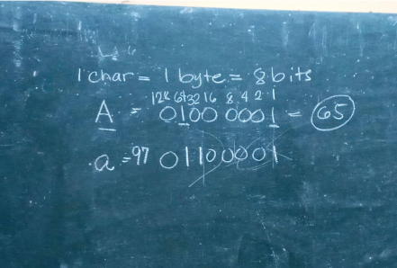
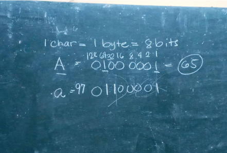

Powered by Miasco 2023


To the top

This lesson, with its blend of theoretical foundations and practical
applications, stands out as my favorite. It not only demystified the
binary system but also showcased the transformative power of hands-on
learning in making seemingly complex topics accessible and enjoyable.
At first, grasping the binary system seemed daunting, but as I engaged
in more exercises and practices conversions, the complexity gradually
dissipated. The iterative process of converting values into binary not
only enhanced my understanding of the binary system but also sharpened
my problem-solving skills. What initially felt like a challenging task
transformed into a satisfying skill through consistent practice.
In Unit 2, Chapter 5, delving into the intricacies of Number Systems,
particularly the Binary Number System, proved to be both challenging
and rewarding. The binary system, characterized by its use of only two
unique digits, 0 and 1, in representing numeric values, plays a
fundamental role in computer science. The highlight of this chapter
for me was the interactive activity that required us to calculate the
binary representation of our first names. This hands-on exercise not
only made the learning experience enjoyable but also provided a
practical application of the theoretical concepts.
Unraveling the Magic of Number Systems

 



Favorite
Outputs
Delving into the fundamentals of web development, I've gained
valuable insights into HTML as the structural backbone of web pages.
Understanding the role of HTML tags as building blocks has been
pivotal in shaping the content structure. The introduction to CSS
has provided a powerful tool for styling HTML elements, offering
systematic control over design aspects. Exploring coding editors and
browser developer tools has added a practical dimension to the
learning process, enhancing my ability to navigate the web
development landscape. This foundation sets the stage for crafting
visually appealing and well-structured websites, and I look forward
to further proficiency in HTML and CSS.
MODULE 5: BASIC HTML & CSS
Unit 5: Web Development
This chapter on cybersecurity brought to light the critical
importance of safeguarding ourselves and organizations from the
escalating threats in the cyber world. The distinction between
threats, vulnerabilities, and risks provided a clear framework to
comprehend the potential dangers and their consequences. Learning
about practical measures to protect against cyber attacks, such as
implementing strong passwords, two-factor authentication, and being
cautious with personal information, empowered me with actionable
steps to enhance digital security. The lesson underscored the
proactive role individuals can play in minimizing risks and
fortifying the defense against cyber threats, fostering a heightened
awareness of the evolving landscape of online security.
CHAPTER 7: PROTECTING
YOURSELF AGAINST CYBER
ATTACKS
The lesson on the Internet provided a profound insight into its
multifaceted nature, extending beyond the World Wide Web to
encompass various services like email, chat rooms, and the
revolutionary concept of cloud computing. Understanding cloud-based
solutions such as SaaS, PaaS, and IaaS underscored the flexibility
and efficiency they offer for different business requirements.
Exploring the advancements in Artificial Intelligence, particularly
Machine Learning, revealed the transformative potential of machines
learning and making predictions based on existing data. This lesson
deepened my appreciation for the evolving landscape of technology
and its broad applications.
MODULE 4: THE INTERNET
& WORLD WIDE WEB
Unit 4: The Internet
Exploring the darker side of the digital realm in this chapter
served as a stark reminder of the dual nature of technology—bringing
both convenience and peril. While we often bask in the comforts of
the Information Age, it is crucial to acknowledge the rising threats
of cybercrime and cyber-attacks. The concept of cybersecurity,
encompassing both digital and physical security, emerged as a
critical shield against potential harm. Recognizing personal data as
a valuable asset highlighted the need for vigilant protection. The
awareness that cybercriminals continually evolve their methods,
growing more sophisticated and ruthless, instilled a sense of
caution. This lesson emphasized the imperative role of cybersecurity
in safeguarding the intricate web of networks, computers, and data
in our technology-driven world.
CHAPTER 6: BASIC CONCEPT OF COMPUTER
SECURITY
Unit 3: The Dangers of the Information Age
Learning about binary code and its role in computer information
processing was enlightening. Understanding how data is translated
into the binary system, using 1s and 0s to convey information,
provided insights into the core language of computers. Exploring the
Binary Number System, its base-2 nature, and its prevalence in
electronic devices, where 0 and 1 denote off and on states,
showcased the practical applications of this system. The comparison
with the decimal system highlighted the significance of digit
position and value. This lesson unveiled the foundational principles
behind data representation, offering a glimpse into the essential
language computers rely on for various processes.
CHAPTER 5: NUMBER
SYSTEMS
Exploring computer systems revealed their enduring components –
Hardware, Software, People ware, and Data ware. Understanding the
role of system and application software, along with the significance
of human interaction (people ware) and data processing, provided a
comprehensive view. Recognizing data as atomic-level information and
information as processed, meaningful data clarified their
interconnected dynamics. This lesson demystified the fundamental
aspects of computer systems, emphasizing the collaborative interplay
that defines our digital world.
CHAPTER 4:
INTRODUCTION TO
COMPUTER SYSTEMS
Exploring the Information Processing Cycle revealed its vital role
in navigating our data-centric world. Understanding the systematic
flow of input, processing, storage, and output is crucial for
meaningful decision-making. The distinction between raw data and
organized information became clear, deepening my appreciation for
the transformative power of data processing. Analogizing the cycle
to a computer's processing sequence underscored its reflection of
our cognitive functions. Recognizing how each stage aligns with
receiving, analyzing, remembering, and producing results provides
valuable insights into how our minds process information in our
data-driven era.
CHAPTER 3:
INFORMATION
PROCESSING Cycle
Unit 2: How Computers Work
Exploring professions and careers in computing has been
enlightening, revealing the pervasive influence of computer
technologies across various sectors. The diverse categories,
including programming, software development, information systems,
telecommunications, and more, showcase the vast opportunities within
the field. I'm impressed by the dynamic nature of computer-related
careers, which are constantly evolving with technological
advancements. The emphasis on creativity and collaboration
challenges stereotypes, making computing an exciting and relevant
domain. Recognizing the in-demand nature of these skills motivates
me to delve deeper into the world of computing, eager to explore and
contribute to its ever-changing landscape.
CHAPTER 2: PROFESSIONS & CAREERS
IN COMPUTING
Exploring the realm of computing revealed its profound historical
evolution, from early mechanical tools to the integrated circuits of
today. Learning about the different computing generations showcased
the rapid technological advancements. The impact of computing across
diverse sectors, from healthcare to education and business,
emphasized its indispensable role in modern life. The reflection on
technology in education, fostering personalized learning and
creativity, left a lasting impression on me. Additionally,
understanding the integration of technology in business underscores
its pivotal role in sustaining and growing industries. This journey
has broadened my perspective on technology's pervasive influence,
inspiring me as both a student and a future professional in this
dynamic landscape.
CHAPTER 1: WHAT IS COMPUTING?
Unit 1: Introduction to Computing
Learnings
A Historical Perspective of the Art and Science of Animation
Top 10 Study Hacks to Elevate Your
Learning Experience
Navigating College Life:
A Survival Guide for Freshmen
Blog Entries
Flex
Blogs
Home
MIASCO